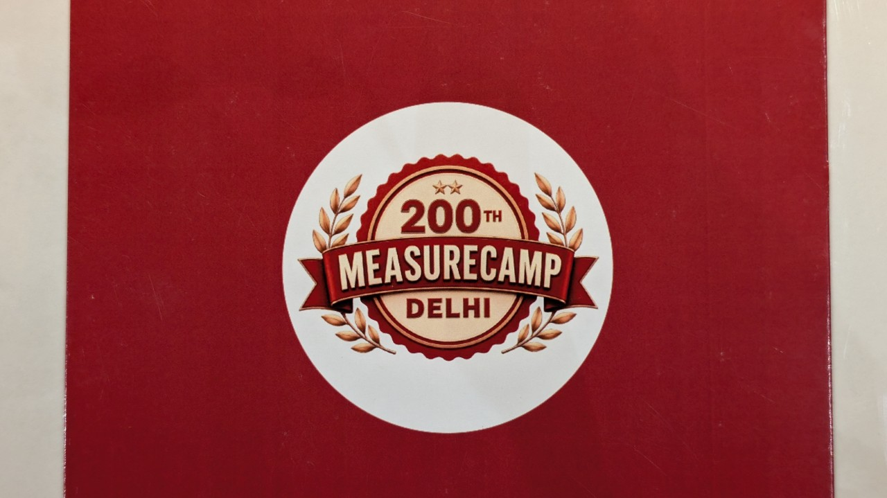
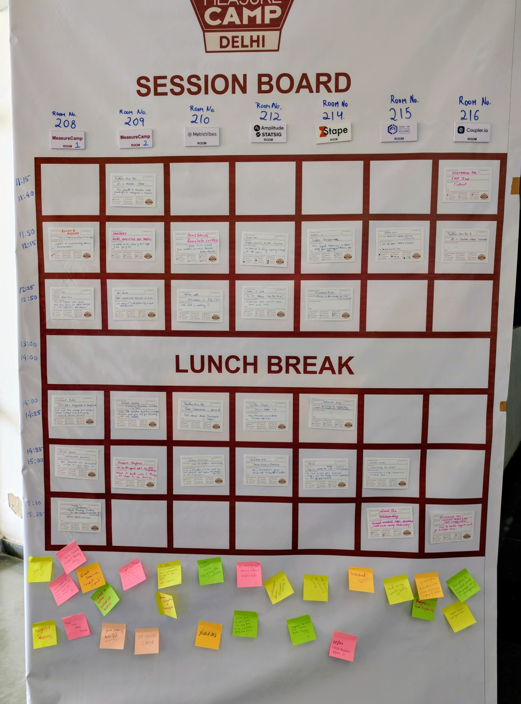
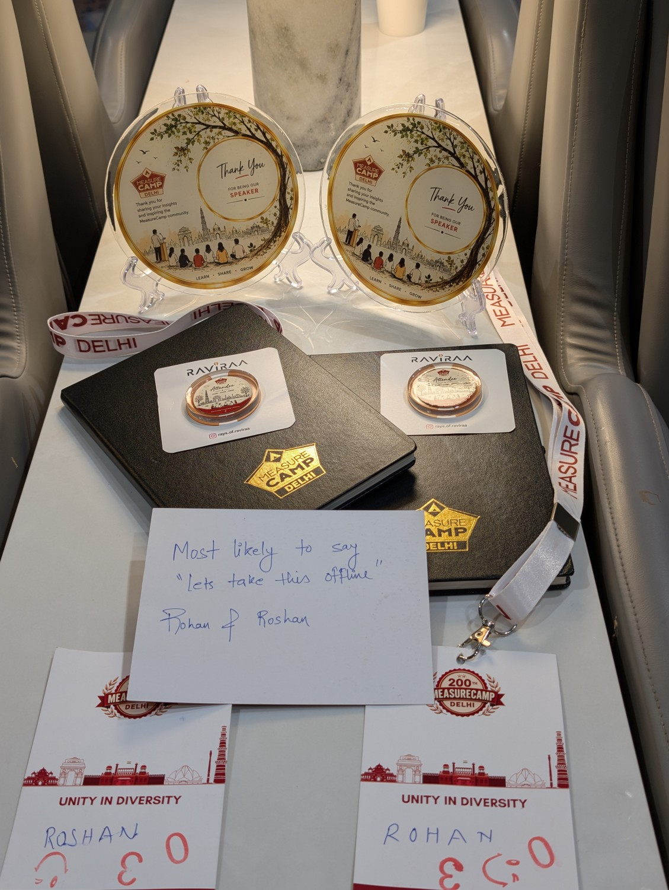

Last week I went to MeasureCamp Delhi 2026. This was their 200th event and indeed a special one. Before going, I had a simple picture in my head. Rows of chairs. A stage. Some speakers talking. Us nodding along. Chai/Coffee in between. Maybe a goodie bag at the end. People looking to sell their product every now and then. Group of students clicking selfies all over. The standard conference deal we have all attended at least fifty times in our careers.
I was wrong indeed.
What Is an Unconference?
MeasureCamp is something called an "unconference." When I heard the word for the first time, I thought maybe they forgot to plan the conference part. It was on purpose though. There is no fixed agenda. The event starts with a short intro, sponsors get their thank you, and then they show you a big blank board with time slots and room numbers. That board is the real hero of the day. Here is a picture:

I remember pre-covid days, I did something similar. As a meetup organizer at DevOps Pune and after getting some inspiration from Seattle meetup groups, I started working on Lean Coffee format of meetups since we were getting a lot of marketing pitches back then. Here is what Lean Coffee is — definition copied as-is from their site:
Lean Coffee is a structured, but agenda-less meeting. Participants gather, build an agenda, and begin talking. Conversations are directed and productive because the agenda for the meeting was democratically generated.
So I now assumed this Unconference was probably the same, with a new name. But again, I was wrong.
Here is what happens. If you want to speak on something, you write it on a small card, stick it on the board, and boom, you are now a speaker. No approval committee. No forms. No "we will get back to you." If people like your topic, they walk in. If they don't, you get a very empty room and a good lesson in humility.
Only one rule was strict. No pitching your company. Sponsors already pay for that privilege, so the rest of us just talk shop, not sales. Once that rule was set, every conversation in the building felt honest. Nobody was secretly selling you a subscription while pretending to chat.
Wow! It sounded good and scary at the same time.
Good, because:
- This was different. A different learning experience is always good.
- No marketing pitches. As an organizer, I know how bad this can get.
- I could choose who and what I want to listen to.
- So many good topics being displayed and so much to learn.
Scary because:
- Embarrassment of not having any audience if you end up becoming a speaker.
- Fear of missing out on good speakers if multiple good events go in parallel.
How I Accidentally Became a Speaker
My colleague Rohan Deshpande and I went there just to attend, representing Convert.com, nothing more. No plan to speak, no slides, nothing prepared. But after the opening session, we looked at the board, looked at each other, and thought, why not? We put up a session on how AI has been sneaking into troubleshooting and internal workflows at CRO and A/B testing companies. Basically the stuff we have been quietly doing for months.
We kept it in a very informal discussion format. In fact, I sat down with the attendees just facing them. More like a group chat than a lecture. About 15 to 20 people joined. And the questions came fast. Do you actually trust AI's calls or are you just being brave? Where is this going for testing platforms? Personalisation, traffic tracking, integrations with tools people already use daily. People were genuinely curious, not just polite.
Best part of the whole day, honestly. We did not plan to speak, did not prepare a single slide, and still walked away with speaker mementos. Somehow that felt more earned than if we had rehearsed it for a week.
The Day Itself
This time the turnout was around 120 plus people. I think they expected more, but Delhi was also hosting the BRICS summit that same day, so a lot of people probably got stuck in traffic or security barricades instead of analytics discussions. Still, seven breakout rooms ran side by side the whole day, and people moved between rooms freely, following their curiosity, not any fixed schedule.
I also sat in on a few sessions myself. One on attribution problems in ads and CRO. One on moving from GA4 to Amplitude. One on data governance and AI. And one with a title that stuck with me — "How Data Lie." Every session was run by someone actually doing the work, not someone presenting a fancy case study made for likes.

But if I am honest, no single session was the best part. The people were. I met folks from Amplitude, founders running their own analytics platforms, and CRO experts who have worked with some really big consumer brands. Normally this kind of networking takes weeks of cold emails and LinkedIn requests that nobody replies to. Here it happened in five minutes near the coffee counter.
A Thank You to the Organisers
This was also the 200th MeasureCamp Delhi event, which is no small number. A big thank you to the organisers and volunteers who pulled this off. Running an unconference sounds easy on paper — "just let people talk" — but making that chaos actually work smoothly takes real effort. They did a solid job.
Thank you so much: Tanmay Garg, Priya Dhiman, Anuj B., Abhishek Deswal — and sorry if I missed anyone.
Go Once. Go With Zero Expectations.
If you work anywhere near analytics, data, or experimentation, and you have never been to a MeasureCamp, go once. Go with zero expectations. That is honestly the whole point.